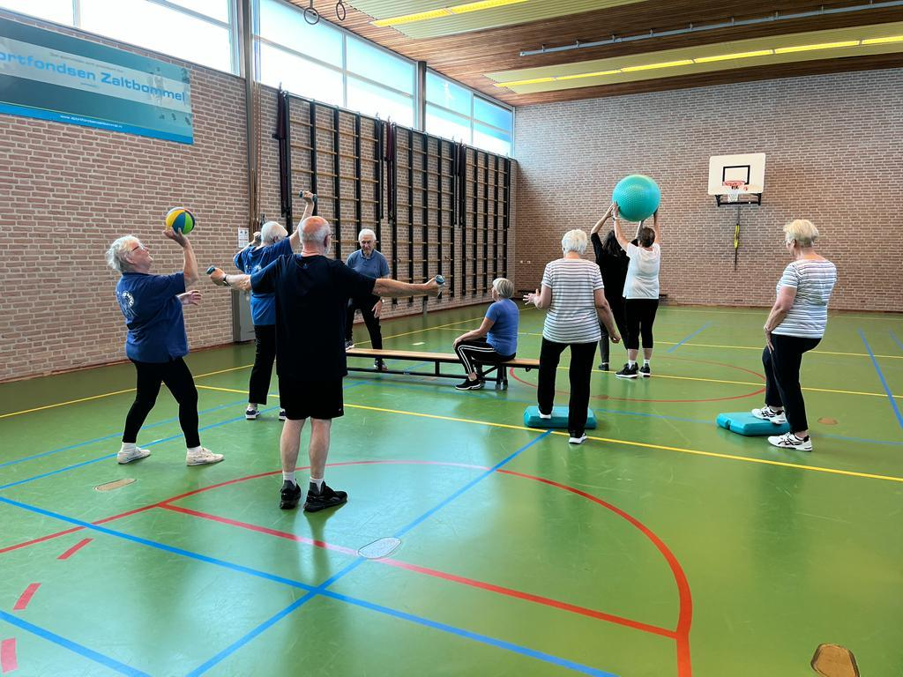

Gym voor senioren in Zaltbommel
Eén uur per week samen bewegen, in uw eigen tempo. Met een gediplomeerde leidster, en altijd met een spel aan het eind. Voor iedereen vanaf ongeveer 60 jaar.
Bel voor een gratis proefles 06-50446425
Liever mailen? johannolly@live.nl

Actueel
Kerstvakantie. De laatste les van dit jaar is op donderdag 17 december. Vanaf dinsdag 5 januari 2027 is er weer les.
Waarom Senioren Actief?
- Al meer dan 20 jaar Een vertrouwde sportvereniging in Zaltbommel.
- Gediplomeerde leidster Deskundige begeleiding, in uw eigen tempo.
- Gezellig samen Een kleine 100 leden, in gemengde groepen.
- €10 per maand Dat is €120 per jaar. De proefles is gratis.
Wat doet u in de les?
Een les duurt een uur. U begint met een warming-up. Daarna doet u oefeningen voor uw conditie, sterke spieren, evenwicht en coördinatie.
In het tweede deel speelt u samen, bijvoorbeeld badminton, tennis of volleybal. We sluiten altijd af met een spel.
U doet alles in uw eigen tempo. De groepen zijn ingedeeld op niveau. Daarbij kijken we naar leeftijd en naar wat u kunt.
Niet alleen het nut van bewegen is belangrijk, maar ook het plezier.
Alles op een rij
Wanneer is de les?
- Dinsdag
- 13.30–14.30 uur
- 14.30–15.30 uur
- Woensdag
- 15.00–16.00 uur Stoelgym
- Donderdag
- 15.00–16.00 uur
- 16.00–17.00 uur
U komt op een vast lesuur. Kunt u een keer niet? Dan haalt u de les in op een ander uur in dezelfde week.
Waar is de les?
In de sportzaal aan de Klipperstraat in Zaltbommel.
Klipperstraat 3
5301 TR Zaltbommel
Bekijk de route in Google Maps
De sportzaal ligt in Zaltbommel, in de Bommelerwaard. U bent welkom uit de hele streek: uit de dorpen van de gemeente Zaltbommel, zoals Brakel, Aalst, Gameren en Zuilichem, en uit de gemeente Maasdriel, zoals Kerkdriel, Hedel, Ammerzoden en Rossum.
Wat kost het?
€120 per jaar
Dat is €10 per maand. U betaalt in twee keer: in januari en in augustus. De proefles is gratis en vrijblijvend.
Bent u lange tijd ziek? Dan kan de bijdrage in overleg met de penningmeester worden aangepast.
Minder goed ter been?
Op woensdag van 15.00 tot 16.00 uur is er stoelgym. Als het nodig is, doet u de oefeningen op of bij een stoel.
Wie zijn wij?
Senioren Actief Zaltbommel is een sportvereniging voor senioren. U kent ons misschien als 50+Actief. We bestaan al meer dan twintig jaar en hebben een kleine 100 leden.
We sporten in gemengde groepen, onder deskundige leiding. Gezelligheid, ontspanning en plezier vinden we net zo belangrijk als het bewegen zelf.
De meeste leden zijn 60 jaar of ouder. Maar jonger mag ook: er doen ook vijftigers mee.
Kom gratis een proefles meedoen
Bel Johan van der Meijden voor meer informatie of om een proefles af te spreken. U mag ook eerst een keer komen kijken tijdens een les.
Bel voor een gratis proefles 06-50446425
Liever mailen? johannolly@live.nl
Zoekt u dit voor uw vader, moeder, opa of oma? U mag ook voor een ander bellen of mailen.